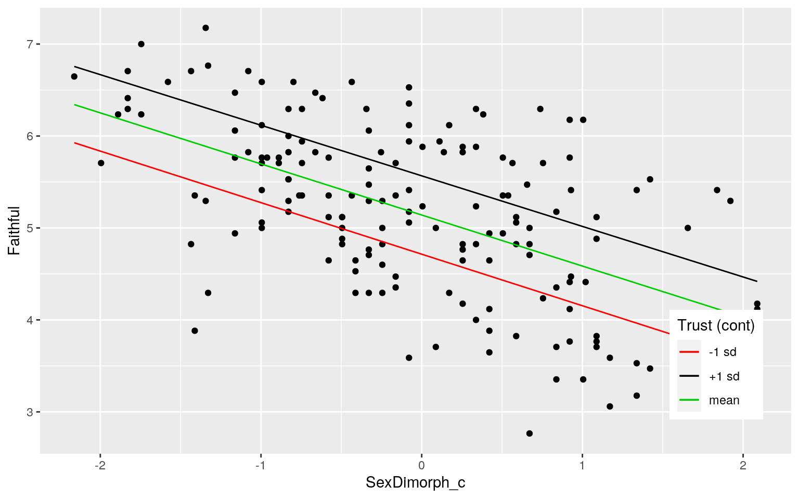

Introduction:
I chose to analyze the ‘FaithfulFaces’ dataset, regarding a study of college students and their observations of a photograph of a person of the opposite sex. The students then rated the person in the photograph on a scale from 1 to 10 for attractiveness (‘Attract’), trustworthiness (‘Trust’), faithfulness (‘Faithful’), sexual dimorphism (how distinctly masculine as a male or feminine as a female they appear) (‘SexDimorph’). The person in the photograph’s sex (‘FaceSex’), the rater’s sex (‘RaterSex’), and whether or not the person in the photo was unfaithful in a past relationship (‘Cheater’) was all recorded, to make a total of 7 variables. There were 170 total observations recorded in total.
I believe people who score more sexually dimorphic (appearing more masculine or feminine) would be rated as more likely to be unfaithful. I don’t think there will be as clear of a relationship between attractiveness and faithfulness (as in people who are rated as more attracted being also rated as more unfaithful) because people are inclined to trust those they find attractive and may not be as quickly inclined to rate them as unfaithful. I do still believe there will be somewhat of a relationship there though. However, I don’t believe that either of these factors (being attractive or sexually dimorphic) will have a relationship with whether or not the person in the photo is actually a cheater/faithful.
#importing dataset
library(readr)
FaithfulFaces <- read_csv("~/SDS348_notshared/FaithfulFaces.csv")Part 1: MANOVA Testing
man <- manova(cbind(SexDimorph, Faithful, Attract, Trust)~FaceSex, data=FaithfulFaces)
summary(man) #test that at least either sexdimorph/faithful/attract/trust differ by facesex## Df Pillai approx F num Df den Df Pr(>F)
## FaceSex 1 0.20961 10.939 4 165 6.827e-08 ***
## Residuals 168
## ---
## Signif. codes: 0 '***' 0.001 '**' 0.01 '*' 0.05 '.' 0.1
' ' 1summary.aov(man) #which (sexdimorph/faithful/attract/trust) differ by facesex## Response SexDimorph :
## Df Sum Sq Mean Sq F value Pr(>F)
## FaceSex 1 12.36 12.3598 13.885 0.0002652 ***
## Residuals 168 149.55 0.8902
## ---
## Signif. codes: 0 '***' 0.001 '**' 0.01 '*' 0.05 '.' 0.1
' ' 1
##
## Response Faithful :
## Df Sum Sq Mean Sq F value Pr(>F)
## FaceSex 1 27.229 27.2293 35.823 1.27e-08 ***
## Residuals 168 127.698 0.7601
## ---
## Signif. codes: 0 '***' 0.001 '**' 0.01 '*' 0.05 '.' 0.1
' ' 1
##
## Response Attract :
## Df Sum Sq Mean Sq F value Pr(>F)
## FaceSex 1 0.363 0.36264 0.4798 0.4895
## Residuals 168 126.982 0.75584
##
## Response Trust :
## Df Sum Sq Mean Sq F value Pr(>F)
## FaceSex 1 2.314 2.31372 3.7592 0.05419 .
## Residuals 168 103.401 0.61548
## ---
## Signif. codes: 0 '***' 0.001 '**' 0.01 '*' 0.05 '.' 0.1
' ' 1#5 total tests
1 - (0.95^5) #prob of at least one type-I error## [1] 0.22621910.05/5 #bonferroni correction## [1] 0.01library(rstatix)
group <- FaithfulFaces$FaceSex
DVs <- FaithfulFaces %>% select(SexDimorph, Faithful, Attract, Trust)
#Test multivariate normality for each group (null: normality met)
sapply(split(DVs,group), mshapiro_test)## F M
## statistic 0.926527 0.9828878
## p.value 0.0001623905 0.2989608#Box's M test (null: homogeneity of vcov mats assumption met)
box_m(DVs, group)## # A tibble: 1 x 4
## statistic p.value parameter method
## <dbl> <dbl> <dbl> <chr>
## 1 46.7 0.00000109 10 Box's M-test for Homogeneity of
Covariance MatricesSignificant differences were found between male and females rated for at least one of the dependent variables, Pillaitrace = 0.20961, pseudoF(4,165) = 10.939, p = 6.827e-08. There were five tests conducted in total (1 MANOVA, 4 univariate ANOVAs), resulting in 0.2262191 as the probability of at least one type-I error, and a Bonferroni correction of 0.01 was used to combat this. There was no need to use t-tests to conduct post-hoc analyses as the ‘FaceSex’ variable only had two groups, so the information about which groups differed was given in the univariate ANOVAs. ‘SexDimorph’ and ‘Faithful’ were significant - males and females rated significantly differ in sexual dimorphism and faithfulness ratings, F(1,168) = 13.885, p = 0.0002652 and F(2,147) = 35.823, p = 1.27e-08, respectively. There are a large number of assumptions for the MANOVA test and oftentimes it is difficult for all of them to be met. In this case, the multivariate normality and homogeneity of within-group covariance matrices assumptions are not met. There is also likely preexisting relationships between dependent variables which violates the multicollinearity assumption.
Part 2: Randomization Test
FaithfulFaces %>% group_by(RaterSex) %>% summarize(means=mean(Trust)) %>% summarize(`mean_diff1`=diff(means))## # A tibble: 1 x 1
## mean_diff1
## <dbl>
## 1 0.233#men score women about 0.23 points higher on trust than women score men
set.seed(348)
rand_dist<-vector() #create vector to hold diffs under null hypothesis
for(i in 1:5000){
new<-data.frame(Trust=sample(FaithfulFaces$Trust),RaterSex=FaithfulFaces$RaterSex) #scramble columns
rand_dist[i]<-mean(new[new$RaterSex=="M",]$Trust)-
mean(new[new$RaterSex=="F",]$Trust)} #compute mean difference
mean(rand_dist>0.2334701 | rand_dist< -0.2334701) #two-tailed p value## [1] 0.047#significant
{hist(rand_dist,main="",ylab=""); abline(v = c(-0.2334701, 0.2334701),col="red")}The null hypothesis is that there is no mean difference in ‘Trust’ ratings between male and female raters, while the alternative is there is a significant difference in trust ratings male and female raters. Male raters score the women they are rating significantly higher in ‘Trust’ value on average by than female raters score the men they are rating (p = 0.047).
Part 3: Linear Regression Model
#Faithfulness score predicted by sexdimorphic and trust
#mean centering numerics involved in interaction
FaithfulFaces$SexDimorph_c <- FaithfulFaces$SexDimorph - mean(FaithfulFaces$SexDimorph, na.rm = T)
FaithfulFaces$Trust_c <- FaithfulFaces$Trust - mean(FaithfulFaces$Trust, na.rm = T)
fit <- lm(Faithful~SexDimorph_c*Trust_c,data=FaithfulFaces)
summary(fit)##
## Call:
## lm(formula = Faithful ~ SexDimorph_c * Trust_c, data =
FaithfulFaces)
##
## Residuals:
## Min 1Q Median 3Q Max
## -1.68491 -0.47230 0.00223 0.44144 1.67459
##
## Coefficients:
## Estimate Std. Error t value Pr(>|t|)
## (Intercept) 5.140726 0.049428 104.004 < 2e-16 ***
## SexDimorph_c -0.555323 0.051003 -10.888 < 2e-16 ***
## Trust_c 0.538840 0.063953 8.426 1.64e-14 ***
## SexDimorph_c:Trust_c 0.006641 0.061253 0.108 0.914
## ---
## Signif. codes: 0 '***' 0.001 '**' 0.01 '*' 0.05 '.' 0.1
' ' 1
##
## Residual standard error: 0.6431 on 166 degrees of
freedom
## Multiple R-squared: 0.5569, Adjusted R-squared: 0.5489
## F-statistic: 69.54 on 3 and 166 DF, p-value: < 2.2e-16#graph
new1<-FaithfulFaces
new1$Trust_c<-mean(FaithfulFaces$Trust_c)
new1$mean<-predict(fit,new1)
new1$Trust_c<-mean(FaithfulFaces$Trust_c)+sd(FaithfulFaces$Trust_c)
new1$plus.sd<-predict(fit,new1)
new1$Trust_c<-mean(FaithfulFaces$Trust_c)-sd(FaithfulFaces$Trust_c)
new1$minus.sd<-predict(fit,new1)
newint<-new1%>%select(Faithful,SexDimorph_c,mean,plus.sd,minus.sd)%>%gather(Trust,value,-Faithful,-SexDimorph_c)
mycols<-c("#619CFF","#F8766D","#00BA38")
names(mycols)<-c("-1 sd","mean","+1 sd")
mycols=as.factor(mycols)
ggplot(FaithfulFaces,aes(SexDimorph_c,Faithful),group=mycols)+geom_point()+geom_line(data=new1,aes(y=mean,color="mean"))+geom_line(data=new1,aes(y=plus.sd,color="+1 sd"))+geom_line(data=new1,aes(y=minus.sd,color="-1 sd"))+scale_color_manual(values=mycols)+labs(color="Trust (cont)")+theme(legend.position=c(.9,.2))
#linearity and homoskedsaticity assumption
resids<-fit$residuals
fitvals<-fit$fitted.values
ggplot()+geom_point(aes(fitvals,resids))+geom_hline(yintercept=0, color='red')#normality assumption
ks.test(resids, "pnorm", mean=0, sd(resids)) #Ho: true distribution is normal##
## One-sample Kolmogorov-Smirnov test
##
## data: resids
## D = 0.04963, p-value = 0.7965
## alternative hypothesis: two-sided#formally checking homoskedsaticity
library(sandwich)
library(lmtest)
bptest(fit) #h0 = homoskedastic; don't need robust standard errors##
## studentized Breusch-Pagan test
##
## data: fit
## BP = 3.5369, df = 3, p-value = 0.316coeftest(fit) #normal-theory SEs##
## t test of coefficients:
##
## Estimate Std. Error t value Pr(>|t|)
## (Intercept) 5.1407260 0.0494284 104.0036 < 2.2e-16 ***
## SexDimorph_c -0.5553226 0.0510028 -10.8881 < 2.2e-16 ***
## Trust_c 0.5388402 0.0639533 8.4255 1.635e-14 ***
## SexDimorph_c:Trust_c 0.0066413 0.0612525 0.1084 0.9138
## ---
## Signif. codes: 0 '***' 0.001 '**' 0.01 '*' 0.05 '.' 0.1
' ' 1coeftest(fit, vcov = vcovHC(fit)) #robust SEs##
## t test of coefficients:
##
## Estimate Std. Error t value Pr(>|t|)
## (Intercept) 5.1407260 0.0501229 102.5624 <2e-16 ***
## SexDimorph_c -0.5553226 0.0499749 -11.1120 <2e-16 ***
## Trust_c 0.5388402 0.0586822 9.1824 <2e-16 ***
## SexDimorph_c:Trust_c 0.0066413 0.0505335 0.1314 0.8956
## ---
## Signif. codes: 0 '***' 0.001 '**' 0.01 '*' 0.05 '.' 0.1
' ' 1#Sexdimorph and trust explain a significant amount of variation in faithfulPredicted ‘Faithful’ rating for a person with average ‘SexDimorphic’ rating and average ‘Trust’ rating is 5.140726. When controlling for ‘Trust’, for every one unit in increase in ‘SexDimorph’ rating, ‘Faithful’ rating decreases by 0.555323. Controlling for ‘SexDimorph’, for every one unit in increase in ‘Trust’ rating, ‘Faithful’ rating increases by 0.538840. The interaction means that the magnitude of the relationship between ‘SexDimorph’ and ‘Faithful’ depend on ‘Trust’. The main effects of ‘mean-centered SexDimorph’ (t = -11.1120, df = 166, p < 2e-16) and ‘mean-centered Trust’ (t = 9.1824, df = 166, p < 2e-16) on ‘Faithful’ are both significant, but the interaction between ‘Sexdimorph’ and ‘Trust’ is not significant. The assumptions of linearity, normality, and homoskedasticity are met by this model - checked both graphically and using hypothesis testing. This model explains 54.89% of the variation in the outcome. There is no change in the significance of results after using robust standard errors because the homoskedsaticity assumption was met, so it wasn’t necessary to use robust SEs.
Part 4: Linear Regression Model with Bootstrapped Standard Errors
#bootstrapped SEs by resampling residuals
fit1<-lm(Faithful~SexDimorph_c*Trust_c,data=FaithfulFaces) #fit model
resids<-fit1$residuals #save residuals
fitted<-fit1$fitted.values #save yhats
resid_resamp<-replicate(5000,{
new_resids<-sample(resids,replace=TRUE) #resample resids w/ replacement
FaithfulFaces$new_y<-fitted+new_resids #add new resids to yhats to get new "data"
fit1<-lm(new_y~SexDimorph_c*Trust_c,data=FaithfulFaces) #refit model
coef(fit1) #save coefficient estimates (b0, b1, etc)
})
## Estimated SEs
resid_resamp%>%t%>%as.data.frame%>%summarize_all(sd)## (Intercept) SexDimorph_c Trust_c SexDimorph_c:Trust_c
## 1 0.04950917 0.05065432 0.06246773 0.06016783## Normal-theory SEs
coeftest(fit)[,1:2]## Estimate Std. Error
## (Intercept) 5.140726015 0.04942837
## SexDimorph_c -0.555322583 0.05100277
## Trust_c 0.538840163 0.06395332
## SexDimorph_c:Trust_c 0.006641296 0.06125253## Robust SEs
coeftest(fit, vcov=vcovHC(fit))[,1:2]## Estimate Std. Error
## (Intercept) 5.140726015 0.05012293
## SexDimorph_c -0.555322583 0.04997491
## Trust_c 0.538840163 0.05868215
## SexDimorph_c:Trust_c 0.006641296 0.05053348The bootstrapped standard errors were nearly identical to the standard errors derived from the normal-theory. The robust standard errors were also quite similar to those values but a little smaller.
Part 5: Logistic Regression Model from 2 Explanatory Variables
#predict cheater from 2 variables
logfit<-glm(Cheater~Trust+Attract, data=FaithfulFaces, family="binomial")
coeftest(logfit)##
## z test of coefficients:
##
## Estimate Std. Error z value Pr(>|z|)
## (Intercept) -0.22144 0.97526 -0.2271 0.8204
## Trust -0.16670 0.23030 -0.7238 0.4692
## Attract 0.02118 0.20950 0.1011 0.9195exp(coeftest(logfit))##
## z test of coefficients:
##
## Estimate Std. Error z value Pr(>|z|)
## (Intercept) 0.80136 2.65185 0.7969 2.271
## Trust 0.84645 1.25897 0.4849 1.599
## Attract 1.02141 1.23307 1.1064 2.508class_diag <- function(probs,truth){
#CONFUSION MATRIX: CALCULATE ACCURACY, TPR, TNR, PPV
if(is.character(truth)==TRUE) truth<-as.factor(truth)
if(is.numeric(truth)==FALSE & is.logical(truth)==FALSE) truth<-as.numeric(truth)-1
tab<-table(factor(probs>.5,levels=c("FALSE","TRUE")),factor(truth, levels=c(0,1)))
acc=sum(diag(tab))/sum(tab)
sens=tab[2,2]/colSums(tab)[2]
spec=tab[1,1]/colSums(tab)[1]
ppv=tab[2,2]/rowSums(tab)[2]
#CALCULATE EXACT AUC
ord<-order(probs, decreasing=TRUE)
probs <- probs[ord]; truth <- truth[ord]
TPR=cumsum(truth)/max(1,sum(truth))
FPR=cumsum(!truth)/max(1,sum(!truth))
dup <-c(probs[-1]>=probs[-length(probs)], FALSE)
TPR <-c(0,TPR[!dup],1); FPR<-c(0,FPR[!dup],1)
n <- length(TPR)
auc <- sum( ((TPR[-1]+TPR[-n])/2) * (FPR[-1]-FPR[-n]) )
data.frame(acc,sens,spec,ppv,auc)
}
probs<-predict(logfit,type="response")
class_diag(probs, FaithfulFaces$Cheater)## acc sens spec ppv auc
## 1 0.7058824 0 1 NaN 0.5314167##Confusion matrix
table(predict=as.numeric(probs>.5),truth=FaithfulFaces$Cheater)%>%addmargins## truth
## predict 0 1 Sum
## 0 120 50 170
## Sum 120 50 170#Density plot of log-odds for each outcome
FaithfulFaces$logit<-predict(logfit,type="link") #get log-odds for everyone
FaithfulFaces %>% mutate(Cheater=as.factor(Cheater)) %>%
ggplot() + geom_density(aes(logit, fill=Cheater), alpha=.4) +
theme(legend.position=c(.85,.85)) + xlab("logit (log-odds)") + geom_rug(aes(logit,color=Cheater))#ROC plot
library(plotROC)
ROCplot<-ggplot(FaithfulFaces)+geom_roc(aes(d=Cheater,m=probs), n.cuts=0)+ geom_segment(aes(x=0,xend=1,y=0,yend=1),lty=2)
ROCplotcalc_auc(ROCplot)## PANEL group AUC
## 1 1 -1 0.5314167Controlling for ‘Attract’ ratings, for every 1-unit increase in ‘Trust’, odds of being a cheater change by a factor of 0.84645. Controlling for ‘Trust’ ratings, for every 1-unit increase in ‘Attract’, odds of being a cheater change by a factor of 1.02141. The accuracy is value is 0.7058824. The sensitivity, specificity, and precision are 0, 1, and NaN respectively due to having no true or false positives. The AUC value of the model is 0.5314167, which is pretty bad. The ROC plot is not very good, and the resulting AUC value is the same as the model, 0.5314167 - it is difficult to predict whether or not the person rated is a cheater based on their scores for attractiveness and trustworthiness.
Part 6: Logistic Regression Model from the Rest of the Variables
#predict cheater from all of the variables
logfit2<-glm(Cheater~(.), data=FaithfulFaces, family="binomial")
coeftest(logfit2)##
## z test of coefficients:
##
## Estimate Std. Error z value Pr(>|z|)
## (Intercept) 3.7769030 2.0473457 1.8448 0.0650695 .
## X1 -0.0256570 0.0077639 -3.3047 0.0009509 ***
## SexDimorph -0.5514692 0.2868713 -1.9224 0.0545608 .
## Attract 0.2385767 0.3266404 0.7304 0.4651485
## Trust 0.0231795 0.3349212 0.0692 0.9448234
## Faithful -0.4350656 0.3113129 -1.3975 0.1622576
## FaceSexM 2.2440669 0.8050493 2.7875 0.0053118 **
## RaterSexM NA NA NA NA
## SexDimorph_c NA NA NA NA
## Trust_c NA NA NA NA
## logit NA NA NA NA
## ---
## Signif. codes: 0 '***' 0.001 '**' 0.01 '*' 0.05 '.' 0.1
' ' 1exp(coeftest(logfit2))##
## z test of coefficients:
##
## Estimate Std. Error z value Pr(>|z|)
## (Intercept) 43.68055 7.74731 6.3267 1.067
## X1 0.97467 1.00779 0.0367 1.001
## SexDimorph 0.57610 1.33225 0.1463 1.056
## Attract 1.26944 1.38630 2.0759 1.592
## Trust 1.02345 1.39783 1.0717 2.572
## Faithful 0.64722 1.36522 0.2472 1.176
## FaceSexM 9.43161 2.23681 16.2402 1.005
## RaterSexM NA NA NA NA
## SexDimorph_c NA NA NA NA
## Trust_c NA NA NA NA
## logit NA NA NA NAprobs2<-predict(logfit2,type="response")
##Confusion matrix
table(predict=as.numeric(probs2>.5),truth=FaithfulFaces$Cheater)%>%addmargins## truth
## predict 0 1 Sum
## 0 112 39 151
## 1 8 11 19
## Sum 120 50 170class_diag(probs2, FaithfulFaces$Cheater)## acc sens spec ppv auc
## 1 0.7235294 0.22 0.9333333 0.5789474 0.6878333##10-FOLD CV
set.seed(1234)
k=10
data1<-FaithfulFaces[sample(nrow(FaithfulFaces)),]
folds<-cut(seq(1:nrow(FaithfulFaces)),breaks=k,labels=F)
diags1_cv<-NULL
for(i in 1:k){
train<-data1[folds!=i,]
test<-data1[folds==i,]
truth<-test$Cheater
fit1_cv <- glm(Cheater~(.), family="binomial", data=train)
probs1_cv <- predict(fit1_cv, type="response", newdata=test)
diags1_cv <-rbind(diags1_cv,class_diag(probs1_cv,truth))
}
summarize_all(diags1_cv,mean) ## acc sens spec ppv auc
## 1 0.6705882 0.1325 0.8865551 NaN 0.6316558##LASSO
#install.packages("glmnet")
library(glmnet)
set.seed(1234)
y<-as.matrix(FaithfulFaces$Cheater) #grab response
x<-model.matrix(logfit2)[,-1] #grab predictors
cv<-cv.glmnet(x,y,family="binomial")
lasso<-glmnet(x,y,family="binomial",lambda=cv$lambda.1se)
coef(lasso)## 11 x 1 sparse Matrix of class "dgCMatrix"
## s0
## (Intercept) -0.8754687
## X1 0.0000000
## SexDimorph .
## Attract .
## Trust .
## Faithful .
## FaceSexM .
## RaterSexM .
## SexDimorph_c .
## Trust_c .
## logit .The accuracy value is 0.723529. The sensitivity, specificity, and precision values are 0.22, 0.9333333, and 0.5789474 respectively. The AUC value is 0.6878333, which is still poor but better than the model with only two predictor variables. Upon running the 10-fold CV with the same model, the accuracy value obtained is 0.6705882. The sensitivity, specificity, and precision values are 0.1325, 0.8865551, and NaN respectively. They have all decreased. The AUC value is 0.6316558, which has decreased as well in comparison to the previous statistics. Unfortunately, when conducting lasso, none of the variables were significant and could not be retained to rerun the model with their values only included (X1 is just an observation/index variable). It appears that none of the variables could significantly predict whether or not the person being rated is a cheater.